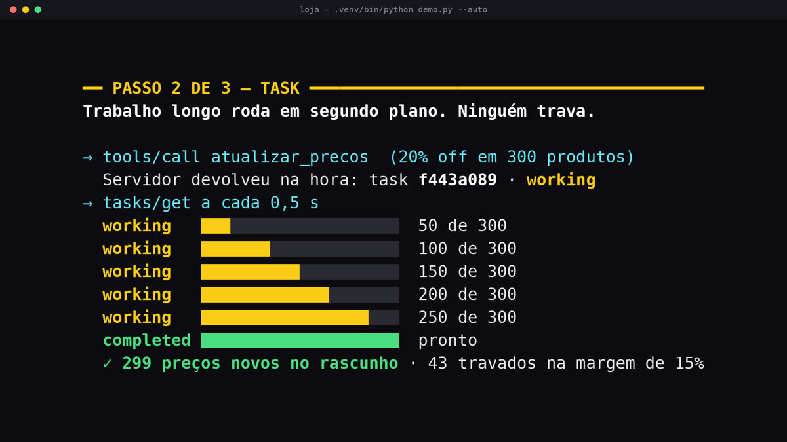
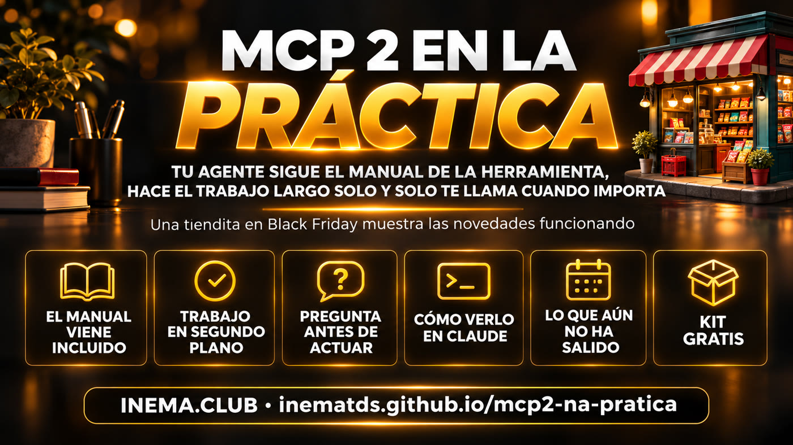
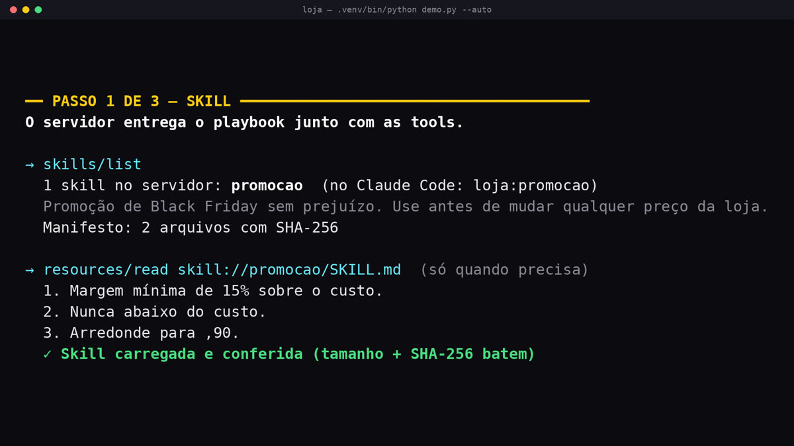

Quieres dejar que la IA trabaje en tus programas sin explicar todo de nuevo, sin quedarte esperando y sin miedo a que haga algo que no tiene vuelta atrás. MCP 2 en la práctica es un kit gratuito y abierto que muestra esto en una tiendita de mentira con 300 productos. MCP (Model Context Protocol) es el estándar abierto que conecta la IA con el resto del software; el 24/11/2026 sumó el manual incluido, el trabajo en segundo plano y la pregunta antes de actuar. Sirve para quienes usan agentes como Claude y para quienes construyen conectores. “MCP 2.0” es solo el apodo que circula: todo lo que ves aquí viene del anuncio de Anthropic y del blog oficial de MCP.
De la IA que vigilas a la IA que te llama en el momento justo
Tres cambios, cada uno probado en un paso del kit (mira Cómo funciona).
Tú eres el manual, el reloj y el freno
- Pegas las reglas de la tienda en el chat cada vez (“margen mínimo, nunca por debajo del costo…”).
- Pides actualizar 300 precios y la conversación se queda detenida hasta terminar.
- La IA publica o borra y te enteras después.
La herramienta trae el manual y pide permiso
- El manual de la tienda viene con el conector y solo entra cuando hace falta (paso 1).
- El trabajo largo se convierte en una tarea en segundo plano; tú sigues conversando (paso 2).
- Antes de publicar o borrar, la herramienta se detiene y te pregunta (paso 3).
/skills).Fuentes oficiales, no rumores
El kit solo usa lo que publicaron Anthropic y el proyecto MCP. Donde algo aún no ha salido, la página lo dice.
📣 Anuncio de Anthropic (24/11/2026)
Presenta las cuatro novedades: el manual incluido (Skills over MCP), el trabajo en segundo plano (Tasks), la pregunta antes de actuar (Elicitation) y el envío de archivos (File Uploads, aún sin lanzar). Dice que ya hay más de 10.000 conectores para Claude y más de 700 millones de descargas de SDK al mes.
🎂 Blog de MCP: “MCP cumple 2 años”
Antes, cada empresa construía un puente aparte para cada IA; con MCP, un conector sirve para toda IA que hable el estándar. OpenAI, Google y Microsoft lo adoptaron, y MCP está en la Agentic AI Foundation, bajo la Linux Foundation: ninguna empresa es su dueña.
📘 Documentación oficial
La página de MCP en Claude Code explica cómo ver los manuales que vienen de los conectores. La especificación de MCP describe cada pieza para quienes construyen (skills, tasks y elicitation).
En palabras del anuncio: Claude pasa a trabajar con un servidor como trabaja con otro agente: aprende de él, le delega tareas e intercambia información y archivos en el camino.
¿Usas agentes o construyes conectores?
Elige tu puerta. Las dos usan la misma tiendita.

🧭 Quien usa agentes
Ganas: Claude ya llega sabiendo las reglas de la herramienta, porque la empresa que hizo el conector escribe el manual y, cuando lo mejora, lo recibes automáticamente. El trabajo largo no traba la conversación, y nada que no tenga vuelta atrás ocurre sin tu sí.
Cómo verlo en Claude Code: escribe /mcp para ver los conectores activos y /skills para ver los manuales que llegaron con ellos (el nombre aparece como conector:manual, por ejemplo loja:promocao). Activado por defecto en los planes Pro, Max y Ultra.

🛠️ Quien construye un servidor MCP
Ganas: un servidor pequeño y abierto, en Python, con las tres piezas funcionando, pruebas que corren contra el servidor real y los nombres oficiales de cada pieza. Los límites están escritos, para que no los descubras en producción.
Qué incluye: cómo el servidor lista y entrega el manual, cómo devuelve un ticket para el trabajo largo y cómo pregunta en el chat o envía a la persona a un sitio web.
Cómo cambia esto tu día
🏷️ La promoción de Black Friday
Hoy: le recuerdas a la IA el margen mínimo, el redondeo y el “nunca por debajo del costo” en cada conversación.
Con el kit: el manual de la tienda trae las tres reglas y la IA lo abre solo cuando va a tocar precios.
⏳ Actualizar 300 precios
Hoy: la conversación se queda detenida hasta la última etiqueta.
Con el kit: el servidor responde al instante con un ticket, hace el trabajo por detrás y avisa cuando termina, con la cantidad de productos frenados en el margen.
🛑 Publicar o borrar
Hoy: confías en que la IA no va a apretar el botón equivocado.
Con el kit: “Publicar 299 preços novos agora?” (¿Publicar 299 precios nuevos ahora?) espera tu sí. Para borrar, tienes que escribir el nombre exacto del producto.
🌍 En herramientas reales (ejemplos del anuncio)
- Manual incluido: Shopify (armar y actualizar la tienda de punta a punta), HubSpot (configurar un cliente nuevo), Atlassian (contexto de la empresa).
- Segundo plano: ZoomInfo, donde la investigación de cuentas y contactos que requería varios pedidos se vuelve un solo trabajo.
- Pregunta antes: Supabase muestra el costo antes de crear un proyecto pago, Railway pregunta antes de eliminar un servicio y GitHub exige escribir el nombre del repositorio antes de que un agente lo borre.
Entiéndelo en pocos minutos

Video muy pronto
El video explicativo aparecerá aquí en cuanto se publique. Mientras tanto, las tres pantallas del demo están en Cómo funciona.
Tres piezas, tres pasos del demo

El manual viene con la herramienta
Beta pública
Además de los botones que la IA puede apretar, el conector entrega el manual de cómo usarlos, escrito por la propia empresa de la herramienta. La IA solo abre el manual cuando lo necesita, así que casi no ocupa espacio en la conversación.
En el kit, el manual de la tienda dice: margen mínimo de 15% sobre el costo, nunca por debajo del costo y precios terminados en ,90. El demo verifica que el manual llegó completo.

El trabajo largo pasa a segundo plano
Disponible
En vez de trabar la conversación, la herramienta responde al instante “recibido, estoy trabajando” y sigue sola. La IA revisa cada cierto tiempo y te avisa cuando termina.
En el kit, un descuento de 20% en 300 productos se convierte en una tarea: el avance aparece de 50 en 50 hasta “listo”, con 299 precios nuevos en el borrador y 43 frenados en el margen.
La herramienta pregunta antes de actuar
Disponible
En medio del trabajo, la herramienta se detiene y te pregunta. Puede ser una pregunta en el mismo chat (sí o no, escribe el nombre) o un enlace al sitio de la empresa, para contraseñas o pagos: así el dato sensible no pasa por el chat.
En el kit: “Publicar 299 preços novos agora?” (¿Publicar 299 precios nuevos ahora?). Con “no”, no se publica nada; con “sí”, los precios van a la tienda. Para borrar, no basta con escribir “Caneca” (taza): tiene que ser “Caneca Azul P” (taza azul P).

Lo que el kit no promete
- La tienda es de mentira: 300 productos ficticios, y el servidor trabaja sobre una copia. No se conecta a tu tienda real.
- Las tareas se guardan solo en la memoria del servidor: si se reinicia, desaparecen.
- En Claude Code, el kit probó la conexión y que el manual aparece; la tarea y la pregunta se probaron con el demo y las pruebas (mira La prueba).
Lo que aún no sale
📎 Envío de archivos (File Uploads)
Enviar un PDF, una hoja de cálculo o una imagen directo a la herramienta sin llenar la conversación. El anuncio dice “próximamente”, sin fecha. El kit solo lo menciona.
📘 El manual incluido
Puede cambiar. Necesita Claude Code v2.1.331 o más reciente y no funciona en el modo sin pantalla (claude -p). En el plan Team, solo después de que el administrador lo active.
⏳ Segundo plano y ❓ pregunta antes
Ya están en los planes Pro, Max y Ultra. Para Team y Enterprise, el segundo plano todavía está en camino.
Y sobre el nombre: “MCP 2.0” no es oficial. Es el apodo que quienes siguen el tema le dan al salto del 24/11/2026; el estándar se sigue llamando MCP.
No instalas nada a mano
Abre un agente de IA en tu computadora
Un agente es una IA que, además de conversar, trabaja con archivos y ejecuta programas, siempre pidiendo permiso. Para ver el manual incluido, usa Claude Code v2.1.331 o más reciente. Codex también puede descargar y ejecutar el demo.
Pega el pedido
La IA lee el kit, explica las novedades en lenguaje simple y te dice cuáles de tus conectores se benefician con ellas.
Lee el repositorio https://github.com/inematds/mcp2-na-pratica (el README, el COMO-LIGAR-NO-CLAUDE.md y la carpeta exemplos). Explícame en lenguaje simple las tres novedades de MCP que muestra (el manual incluido, el trabajo en segundo plano y la pregunta antes de actuar) y lo que aún no se ha lanzado. Después revisa los conectores MCP que ya uso y dime cuáles ganan algo con estas novedades. No instales ni cambies nada antes de mi sí. Con mi sí: descarga el kit en una carpeta aparte, crea el entorno, ejecuta las pruebas y el demo, conecta el servidor “loja” en Claude Code en el ámbito local, muéstrame dónde ver /mcp y /skills y, al final, dime cómo quitarlo.
Di que sí a lo que tenga sentido
Mira el demo ejecutar los tres pasos. Si quieres, abre Claude Code, escribe /skills y busca loja:promocao. Cuando termines, pídele a la IA que quite el servidor de la tienda.
🌐 ¿Solo quieres usarlo, sin instalar nada?
No hay versión en línea del kit. Las novedades ya llegan a través de los conectores oficiales en Claude, en los planes Pro, Max y Ultra (verificado en el anuncio del 24/11/2026). El kit sirve para que veas las tres funcionando por dentro.
⬇️ ¿Dónde se descarga?
No hay instalador: es una carpeta con un programa pequeño en Python, que tu IA prepara. Descarga el ZIP del kit o mira el repositorio.
🧑💻 ¿Tienes perfil técnico?
Los requisitos, los archivos, lo que el SDK ya hace y lo que el kit escribió a mano están en el README.
Las tres piezas por su nombre oficial
Esta es la única parte técnica de la guía. Cada término va con la frase común al lado; el resto está en el README.
📘 Manual incluido: skills/list y skills/get
“El servidor dice qué manuales tiene y entrega el que le pidan.” Es la extensión io.modelcontextprotocol/skills; los archivos del manual salen por resources/read. En el kit, el manual promocao viene con una lista de archivos con tamaño y SHA-256 (una huella digital del archivo), y el cliente la verifica. En Claude Code el nombre aparece como <servidor>:<skill>.
⏳ Segundo plano: taskId y tasks/get
“El servidor devuelve un ticket al instante y el cliente pregunta cómo va.” Los estados son working, completed, failed, cancelled e input_required. Un cliente que no declara la extensión recibe el resultado a la manera antigua (espera y devuelve).
❓ Pregunta antes: elicitation form × url
“Form” es la pregunta en el chat: sí o no, escribe el nombre. “Url” envía a la persona al sitio de la empresa (contraseña, pago), y el dato no pasa por el chat. El kit usa form; url solo se menciona, porque la tiendita no pide datos sensibles.
🏪 El servidor del kit
servidor.py es un servidor MCP “loja” (tienda) que se comunica por la entrada y salida de la terminal (stdio): el manual promocao, la tool atualizar_precos (se convierte en tarea), publicar_precos (pregunta sí o no) y apagar_produto (pide el nombre exacto). El SDK de Python mcp 2.3.0 no trae listas las extensiones de skills y tasks: el kit las escribe a mano.
Ejecutar en 3 comandos (Python 3.10+)
git clone https://github.com/inematds/mcp2-na-pratica cd mcp2-na-pratica python3 -m venv .venv && .venv/bin/pip install -r requirements.txt .venv/bin/python demo.py --auto
Sin --auto, el demo te pregunta a ti. Pruebas: .venv/bin/python -m pytest -q.
Conectar en Claude Code
claude mcp add loja -- "$PWD/.venv/bin/python" "$PWD/servidor.py" claude mcp list # loja: … - ✔ Connected
Dentro de claude: /mcp → loja y /skills → loja:promocao. Con --scope project queda en “Pending approval” hasta que abras claude en la carpeta; el ámbito predeterminado (local) conecta directo. Para quitarlo: claude mcp remove loja.
Límites, con honestidad: las tareas se guardan solo en la memoria del servidor, ttlMs se informa pero no borra nada automáticamente, y tasks/update solo confirma la recepción. El kit habla la versión 2026-07-28 de la especificación, la “sin estado”: pedido y respuesta simples, lo que permite que el servidor corra incluso en serverless. Detalles en README y COMO-LIGAR-NO-CLAUDE.md (en portugués).
Ejecutado de verdad, el 26/11/2026
- Demo: el manual llegó y se verificó (el tamaño y la huella digital coinciden); la tarea de 300 productos terminó con 299 precios nuevos y 43 frenados en el margen; con “no”, no se publicó nada; con “sí”, 299 precios fueron a la tienda; borrar con “Caneca” fue rechazado y con “Caneca Azul P” funcionó.
- Pruebas: 17 pruebas corren contra el servidor real y todas pasaron.
- Claude Code v2.1.332 (Linux): el servidor “loja” se conectó con la versión 2026-07-28, mostró “3 tools · 2 resources · 1 skill”, y
/skillslistó loja:promocao con cerca de 30 tokens, con el aviso “Skills from MCP servers are in beta”.
Lo que la prueba no muestra: en Claude Code no le pedimos al modelo que ejecutara las herramientas, así que allí no vimos la tarea en segundo plano ni la pregunta. Esas dos se probaron con el demo y las pruebas.
Salidas completas en el repositorio: saida-demo.txt (en portugués) y prova-claude-code.txt (en portugués).
Antes de que preguntes
¿Necesito programar?
Para verlo funcionar, no: pegas el pedido de “Cómo empezar” y tu IA hace el resto. Para construir tu propio servidor, sí, y el kit en Python es el punto de partida.
¿Cuesta algo?
El kit es gratis y abierto (licencia MIT). Las novedades en Claude están activadas en los planes Pro, Max y Ultra, que son pagos.
¿“MCP 2.0” es el nombre oficial?
No. Es el apodo que circula para el paquete del 24/11/2026. El estándar sigue siendo MCP, que cumplió 2 años en noviembre de 2026.
¿Funciona con otras IA?
MCP es abierto y fue adoptado por OpenAI, Google y Microsoft. Cada aplicación de IA necesita admitir las piezas nuevas; el kit se probó en Claude Code. El demo corre solo en la terminal, con cualquier agente.
¿Modifica mi tienda real?
No. La tienda es ficticia y el servidor trabaja sobre una copia de los 300 productos.
¿Puedo enviar archivos a la herramienta?
Todavía no. El envío de archivos (File Uploads) se anunció como “próximamente”, sin fecha.
Y tú, ¿qué herramienta te gustaría que se detuviera y te preguntara antes de actuar? Ven a contarlo y llévate este y otros kits gratis en inema.club, directo en internet.